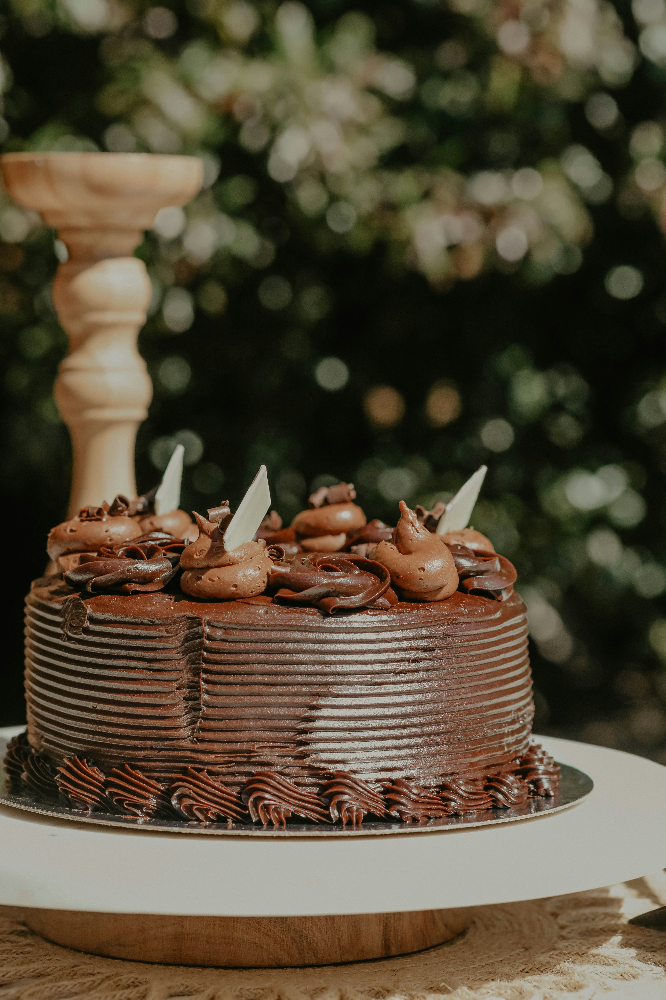

Chocolate Fudge Cake

Description
Benjamina uses melted chocolate and brown sugar in her chocolate cake batter, which gives a fudgy taste while still keeping that fluffy, light texture.
Fill and top with a glossy chocolate ganache for a decadent finish.
Ingredients
- 175g/6oz dark chocolate (70% cocoa solids), chopped
- 275g/9¾oz plain flour
- 1 tsp baking powder
- 1 tsp bicarbonate of soda
- pinch salt
- 135g/4¾oz unsalted butter, at room temperature
- 275g/9¾oz light brown soft sugar
- 2 large free-range eggs, beaten
- 300ml/10fl oz milk (at room temperature)
- 1 tsp vanilla extract
For the chocolate ganache
- 175g/6oz dark chocolate
- 250ml/9fl oz double cream
Steps
- Preheat the oven to 180C/160C Fan/ Gas 4. Grease and line 2 x 20cm/8in deep sandwich cake tins.
- Place the chocolate in a heatproof bowl and set over a saucepan of boiling water (making sure the bottom of the bowl is not touching the water). Gently melt the chocolate while stirring. Once melted, set aside and allow to cool at room temperature.
- In a separate bowl, sift the flour, baking powder and bicarbonate of soda together, then add the salt. Set aside.
- Cream the butter and sugar together using an electric whisk until pale and fluffy (this will take a little longer than when using caster sugar). Continue to whisk while gradually adding the beaten eggs, a little at a time. If the mixture starts to curdle, add 1–2 teaspoons of the sifted flour from the other bowl.
- Once the eggs are incorporated, whisk in the melted chocolate and vanilla, then about half of the milk, adding it gradually. Add half of the flour mixture and fold in using large metal spoon or silicone spatula. Gradually add the remaining milk and fold in the remaining flour.
- Divide between the prepared tins and gently smooth the tops. Bake for approximately 30–35 minutes or until the sponges are light and springy, have slightly shrunk away from the sides of the tins and a toothpick inserted into the centre comes out clean.
- Allow the cakes to cool for 15 minutes in the tins, then loosen around the edges with a knife and turn onto wire racks to completely cool before icing.
- To make the ganache, finely chop the chocolate and put it in a bowl.
- Heat the cream in a small pan until steaming. Just before it comes to the boil, remove from the heat and pour it over the chocolate. Let it sit undisturbed for 30 seconds, then start stirring slowly from the middle, working your way outwards until you have a smooth ganache. If there are still a few lumps that aren’t melted, place the bowl over a pan of simmering water and stir until everything is melted and smooth. Leave the ganache to cool at room temperature.
- Once the ganache is cooled and thick, spread half of it over one of the cooled sponges. Layer the other sponge on top and finish with the remaining ganache.
Home